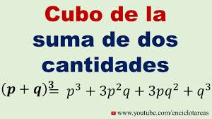

Pagina inicial
proyecto integrado:
Fuentes de energia:

¿Que son?
° Las fuentes de energia son elaboraciones naturales más o menos complejas de las que el hombre puede extraer energía para realizar un
determinado trabajo u obtener alguna utilidad, aunque existen muchas fuentes de energía, toda la energia viene del sol, también son
aquellas sustancias, materiales y fenómenos que pueden ofrecernos energía en cantidad suficiente para producir distintas formas de energía
como: madera,agua,viento,uranio,carbón,petróleo, etc.
los tipos de energía se clasifican como:
Primarios : Son fuentes de energía naturales sin ninguna alteración, estas podrían ser: El agua,
el sol, el calor que produce la tierra, el viento, el gas natural y el carbón.
Secundarios: son el resultado de las transformaciones de las fuentes primarias, estas son
creadas por el hombre las cuales serían: el combustible y la electricidad.
Fuentes de energía renovables
Las fuentes de energía renovables son las cuales se obtienen de fuentes naturales, por lo cual son inagotables y no
producen emisiones de gases de efectos invernaderos, Las energías renovables son cada vez más accesibles y competitivas
ya que a medida que avanza la tecnología se han podido encontrar más formas de mantenimiento.
Existen muchas formas de producir y a la vez consumir energía.
Estos son algunas de las fuentes de energía:
°Energía solar

°Energía eólica
.jpeg)
°Energía hidráulica
.jpeg)
°Energía geotérmica
.jpeg)
°Energía de la biomasa
.jpeg)
°Energía del mar
.jpeg)